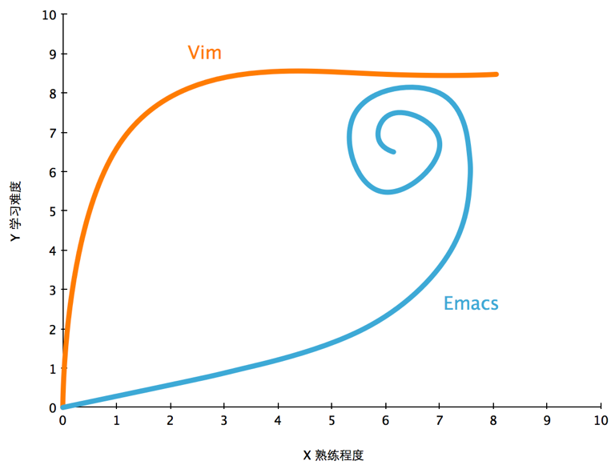

学习曲线
 我想分享张图就是关于 Vim 和 Emacs 的学习曲线，是因为前天我的一个伙伴跟我说他安装了 Emacs，我当时就想到了这个图。
在这个蓝色的星球上，在编辑器领域，存在的这两条神奇的曲线，其背后的两股暗黑势力势如水火，分别守候着两大上古神器，不停地有新人进来，有旧人离开，但永远会有一些人通过了艰难的考验，留下来守护这两大神器……
说回这两条曲线，Vim 的曲线异常陡峭，但是当你度过了那一段艰难时期，就会从此天堑变通途；Emacs 则是初期似乎不过尔尔，但是学习愈深愈艰，而且还会出现回退，反复，360 度大回环等匪夷所思的情况，到最后你终于明白，Emacs 原来是个伪装成编辑器的操作系统，满眼都是泪！
（以上两段摘抄了池老师的文章，有修改）
另一点有趣的是，当你学会了 Vim 之后，你会发现你可以在绝大多数 Linux 发行版中游刃有余地进行文本操作；而当你学会了 Emacs 以后，却并不能保证你可以用明白第二个人的 Emacs，因为每一个人的 Emacs 都不一样。
以上，致我的小伙伴，和即将开始学习 Vim/Emacs 的同学。